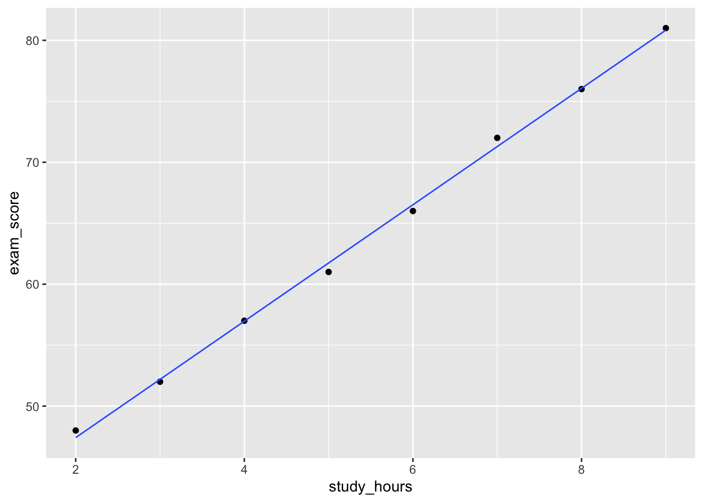

| Outcome type | Possible values | Distributional story | Regression model |
|---|---|---|---|
| Continuous measurement | Approximately any real value | Normal variation around a mean | Linear regression |
| Count | 0, 1, 2, ... | Poisson variation around a rate or expected count | Poisson regression |
| Yes/no outcome | 0 or 1 | Bernoulli variation around a probability | Logistic regression |
10 Thinking with Frequentist Models
NoteLearning Objectives
By the end of this chapter, you should be able to:
10.1 Introduction
So far, much of this book has been about thinking about uncertainty.
- We used probability to describe random processes.
- We used sampling distributions to understand why estimates change from sample to sample.
- We used hypothesis tests to ask whether an observed result would be surprising under a particular assumption.
- We used simulation-based inference to generate artificial worlds and compare them with the data we actually observed.
- We used likelihood to ask which parameter values make the observed data more plausible.
This chapter brings those ideas together through statistical models. A statistical model is a simplified probability story about how data might have been generated. The model is a structured approximation of the real world. It helps us describe patterns, make predictions, and express uncertainty.
In this chapter, we focus on one especially common family of statistical models: regression models. Regression models are useful when we want to understand how an outcome changes with one or more explanatory variables. Instead of estimating just one mean, one probability, or one rate, a regression model allows that quantity to depend on other information.
For example, we might ask:
- How does exam score change with hours studied?
- How does the expected number of tutorial questions attempted change with study time?
- How does the probability of submitting an assignment change with preparation?
These are all regression questions because they are about relationships. The key idea is that regression models still use the same ingredients we have already seen: probability, distributions, likelihood, uncertainty, and simulation. The new step is that we allow the parameters of a distribution to change with predictors.
So rather than asking only:
\[ \text{What is the average outcome?} \]
we begin asking:
\[ \text{How does the expected outcome change as } x \text{ changes?} \]
That shift takes us from estimating isolated quantities to modelling relationships.
NoteFrequentist & Bayesian Models
In this chapter, we use frequentist models. The fitted coefficients are treated as estimates of fixed but unknown quantities. The model is fitted by choosing parameter values that make the observed data fit well, often through least squares or maximum likelihood. In the next chapter, we will revisit the same modelling ideas from a Bayesian perspective. There, the unknown parameters will be treated as uncertain quantities with prior and posterior distributions.
10.1.1 From distributions to models
In the likelihood chapter, we saw that the first step in likelihood-based thinking is to choose a probability model that respects the structure of the data. As a reminder:
- A normal distribution may be reasonable for some continuous measurements.
- A Poisson distribution may be reasonable for some counts.
- A Bernoulli or binomial distribution may be reasonable for yes/no outcomes or successes out of a fixed number of attempts.
Regression models build on that same idea.
This chapter introduces three common frequentist regression models:
- linear regression, for continuous outcomes;
- Poisson regression, for count outcomes;
- logistic regression, for yes/no outcomes.
10.1.2 The modelling recipe
Most models in this chapter have the same basic ingredients.
| Ingredient | Question to ask |
|---|---|
| Outcome | What are we trying to explain or predict? |
| Predictors | What variables might describe the pattern? |
| Distribution | What kind of random variable is the outcome? |
| Link between predictors and distribution parameter | How does the expected value, rate, or probability change with predictors? |
| Assumptions | What must be reasonable for the model to be useful? |
| Performance checks | What does the model miss, and how well does it predict? |
This should feel familiar. In the simulation chapter, we had to decide what process to simulate. In the likelihood chapter, we had to decide what probability model could have produced the data. In hypothesis testing, we had to decide what would be true under the null hypothesis.
10.2 Linear Regression
Suppose we collect information from students in a statistics unit. For each student, we record: (1) how many hours they studied in a typical week; (2) their attendance rate; (3) how many tutorial questions they attempted in one week; (4) whether they submitted the major assignment, and (5) their final exam score.
Suppose the table below represents a small snapshot of our data. Each row is one student. For each student, we have recorded how many hours they studied, their final exam score, how many tutorial questions they attempted, and whether they submitted the assignment.
student_snapshot <- tibble(
student = 1:8,
study_hours = c(2, 3, 4, 5, 6, 7, 8, 9),
questions_attempted = c(1, 2, 2, 3, 4, 5, 6, 7),
submitted = c("No", "No", "Yes", "Yes", "Yes", "Yes", "Yes", "Yes"),
exam_score = c(48, 52, 57, 61, 66, 72, 76, 81)
)
student_snapshot |>
gt() |>
cols_align(align = "center")| student | study_hours | questions_attempted | submitted | exam_score |
|---|---|---|---|---|
| 1 | 2 | 1 | No | 48 |
| 2 | 3 | 2 | No | 52 |
| 3 | 4 | 2 | Yes | 57 |
| 4 | 5 | 3 | Yes | 61 |
| 5 | 6 | 4 | Yes | 66 |
| 6 | 7 | 5 | Yes | 72 |
| 7 | 8 | 6 | Yes | 76 |
| 8 | 9 | 7 | Yes | 81 |
Linear regression is used when the outcome is a continuous measurement and a straight-line relationship is a reasonable first approximation.
Suppose the outcome is final exam score and the predictor is study hours. Therefore, we might have a question as:
How is exam score associated with study hours?
10.2.1 The model
A simple linear regression model can be written as:
\[ Y_i = \beta_0 + \beta_1 x_i + \epsilon_i \]
In this equation:
- \(Y_i\) is the exam score for student \(i\);
- \(x_i\) is the number of study hours for student \(i\);
- \(\beta_0\) is the intercept;
- \(\beta_1\) is the slope;
- \(\epsilon_i\) is the error term, or the part of the outcome not explained by the model.
Another way to write the same model is:
\[ Y_i \sim \text{Normal}(\mu_i, \sigma) \]
with:
\[ \mu_i = \beta_0 + \beta_1 x_i \]
This version makes the distributional story clearer. For each value of study hours, exam scores vary around a mean \(\mu_i\), with spread \(\sigma\).
10.2.2 Estimating the intercept and slope
The linear regression model contains two unknown regression coefficients: \(\beta_0\) and \(\beta_1\). In practice, we estimate these from the data. The estimated values are usually written as: \(\hat{\beta}_0\) and \(\hat{\beta}_1\). The fitted regression line is then:
\[ \hat{Y}_i = \hat{\beta}_0 + \hat{\beta}_1 x_i \]
For simple linear regression, the slope is calculated as:
\[ \hat{\beta}_1 = \frac{ \sum_{i=1}^{n}(x_i - \bar{x})(Y_i - \bar{Y}) }{ \sum_{i=1}^{n}(x_i - \bar{x})^2 } \]
The intercept is then calculated as:
\[ \hat{\beta}_0 = \bar{Y} - \hat{\beta}_1 \bar{x} \]
Fortunately, we do not have to calculate these by hand. Modern software, such as R is able to compute these relatively quickly. There are many ways to construct a linear model in R. For this unit, we will use the glm() function, which has the following form:
glm(
formula =
data =
family =
)The first part is the formula. The formula tells R which variable we want to model and which variable we want to use as the predictor. For example:
exam_score ~ study_hours
The variable on the left-hand side of ~ is the outcome. This is the variable we are trying to explain or predict. In this case, the outcome is exam_score. The variable on the right-hand side of ~ is the predictor. This is the variable we use to help explain the outcome. In this case, it is study_hours.
The second part is data. This tells R where to find the variables named in the formula. For example if our data was called student_snapshot, then we would pass this into the data argument.
The third part is family. This tells R what kind of model to fit. More specifically, it tells R what distributional story we want to use for the outcome. For linear regression, the outcome is continuous, so we use: family = gaussian() The word gaussian is another name for the Normal distribution. This matches the model we wrote earlier:
\[ Y_i \sim \text{Normal}(\mu_i, \sigma) \]
with
\[ \mu_i = \beta_0 + \beta_1 x_i \]
Putting these pieces together, we can fit the model using:
glm(
formula = exam_score ~ study_hours,
data = student_snapshot,
family = gaussian()
)
Call: glm(formula = exam_score ~ study_hours, family = gaussian(),
data = student_snapshot)
Coefficients:
(Intercept) study_hours
37.869 4.774
Degrees of Freedom: 7 Total (i.e. Null); 6 Residual
Null Deviance: 958.9
Residual Deviance: 1.726 AIC: 16.43From the output above, we can see that \(\hat{\beta}_0=37.87\) and \(\hat{\beta}_1=4.77\). The linear regression equation is therefore:
\[ \hat{Y}_i = 37.87 + 4.77x_i \]
In words, the model estimates that a student who studied for 0 hours would have an expected exam score of about 37.87, and each additional hour of study is associated with an increase of about 4.77 marks. The intercept should be interpreted carefully. In this dataset, we only observed students who studied between 2 and 9 hours. A prediction at 0 hours is outside the observed range, so the intercept mainly helps position the fitted line rather than giving a meaningful real-world prediction.
We can visualise this with a scatterplot:
ggplot(student_snapshot, aes(x = study_hours, y = exam_score)) +
geom_point() +
geom_smooth(method = 'lm', se = F, linewidth = 0.5)`geom_smooth()` using formula = 'y ~ x'